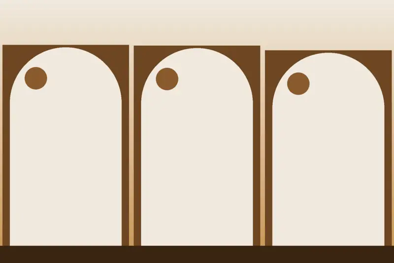
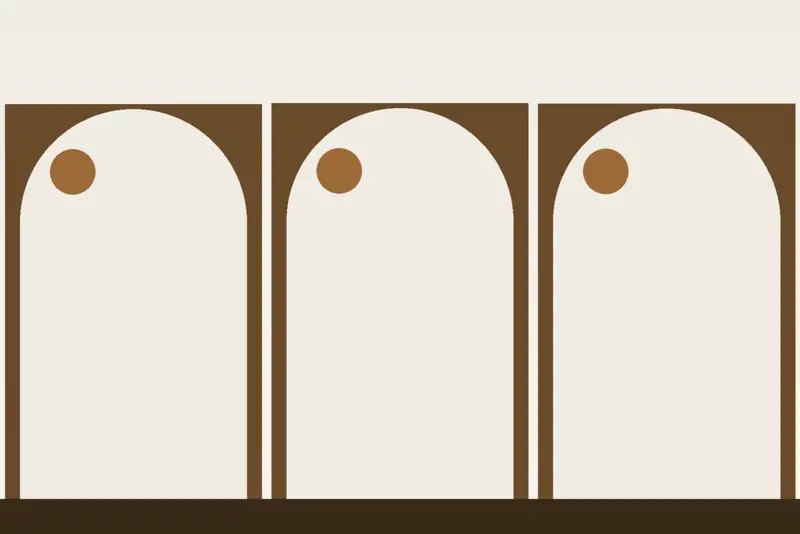

Dobles con vistas y Romántica
La Doble Romántica mira a la Catedral; la Doble Estándar con vistas tiene un balcón sobre la ciudad. Algunas conservan techos de madera con escudos del siglo XV.
Ver disponibilidad →Un hotel en una antigua casa noble del corazón del casco histórico.
El Hotel Santa Isabel abrió en 1990 en pleno casco histórico, la ciudad amurallada que abraza el río Tajo, a pocos pasos de la Catedral.
Conserva balcones originales de la antigua casa noble y techos de madera que estuvieron ocultos durante años, algunos con la pintura de los escudos de las familias que vivieron aquí en el siglo XV.
Todas con aire acondicionado o calefacción, TV, teléfono, wifi y aseo con ducha. Las imágenes son ilustraciones y no muestran el hotel real.

La Doble Romántica mira a la Catedral; la Doble Estándar con vistas tiene un balcón sobre la ciudad. Algunas conservan techos de madera con escudos del siglo XV.
Ver disponibilidad →Superiores amplias de 22 m² con zona de estar y balcones, ideales para familias; Clásicas al patio de flores e Individual Clásica para viajar solo.
Ver disponibilidad →
La Catedral, la Plaza de Zocodover, el Alcázar, Santo Tomé y San Juan de los Reyes, todo a pie desde el casco histórico.
C/ Santa Isabel 24 · 45002 Toledo, en el casco histórico. Recepción abierta las 24 horas.